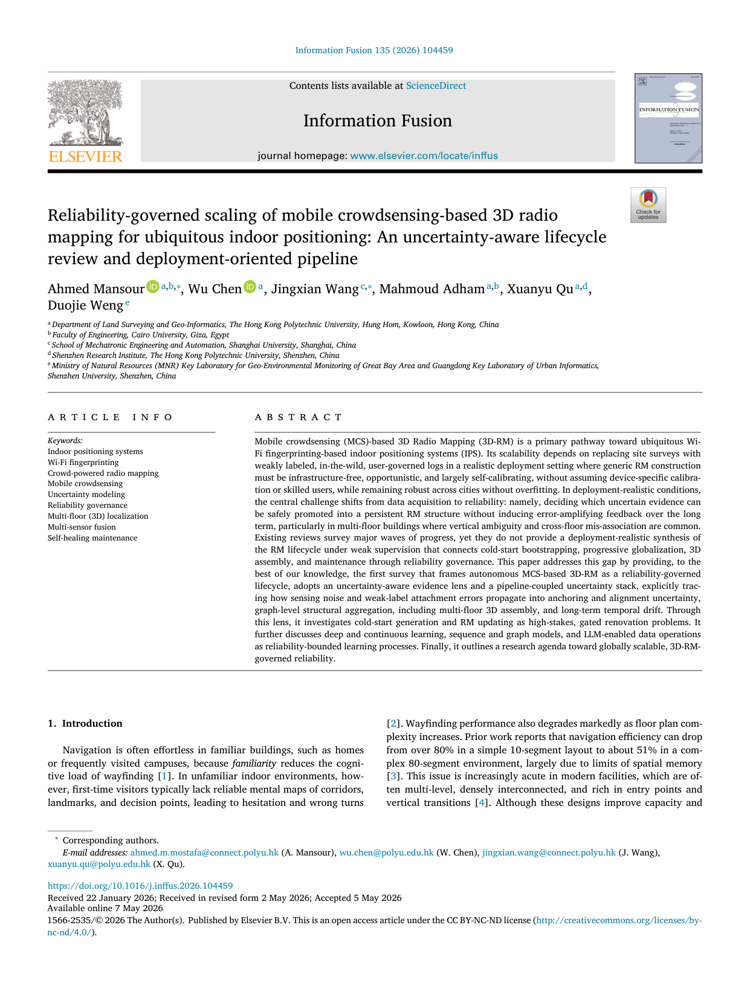
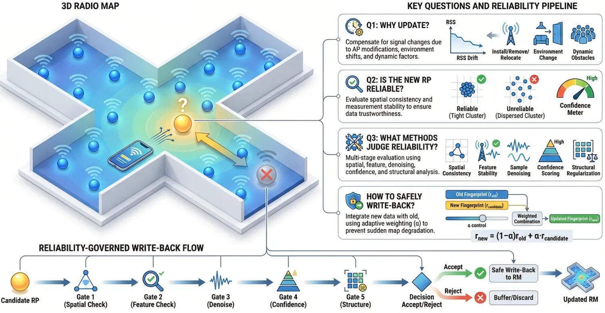

Reliability-governed scaling of mobile crowdsensing-based 3D radio mapping for ubiquitous indoor positioning: An uncertainty-aware lifecycle review and deployment-oriented pipeline
Paper preview

Research story and quick reading guide
This review examines mobile crowdsensing-based 3D radio mapping as a lifecycle problem. Wi-Fi fingerprinting can support scalable IPS, but its practical success depends on the quality and maintainability of the radio map. Traditional radio maps are difficult to build manually, while crowdsensed radio maps are uncertain because they are collected by ordinary users, different devices, and uncontrolled trajectories. The review therefore asks a deeper question: how can 3D radio maps be generated, updated, governed, and trusted throughout their deployment lifecycle?
The paper’s central contribution is its reliability-governed framing. It does not treat crowdsensing as automatically scalable. Instead, it recognizes that scalability creates new uncertainty. Crowdsensed data may be weakly labeled, unevenly distributed across floors, affected by device heterogeneity, and degraded by environmental changes. A practical 3D radio-map pipeline must therefore include reliability qualification, uncertainty modeling, data fusion, map updating, and self-healing maintenance.
The visual story is raw crowdsensed logs → uncertainty-aware qualification → 3D radio-map construction → lifecycle updating → deployment-ready IPS. This chain is useful because it transforms radio mapping from a one-time database problem into an operational infrastructure problem. The map is not finished after creation; it must remain reliable as buildings, APs, devices, and user behavior change.
The review is especially important because it connects multiple research areas that are often separated: Wi-Fi fingerprinting, mobile crowdsensing, 3D indoor representation, multi-floor localization, sensor fusion, uncertainty modeling, and map maintenance. By integrating these themes, the paper gives researchers a structured way to position new work. A method can be evaluated not only by whether it improves localization accuracy, but also by where it fits in the radio-map lifecycle and how it handles uncertainty.
For deployment-oriented readers, the paper explains why radio-map scalability must be reliability-governed. A large crowdsensed database is not automatically useful. The system must know which data are trustworthy, which areas need more coverage, which measurements may be stale, and how uncertainty propagates into localization performance. This makes the review highly relevant to next-generation IPS, AIoT environments, smart buildings, and autonomous map maintenance.
This paper should be cited when discussing mobile crowdsensing-based radio mapping, autonomous 3D radio-map generation, uncertainty-aware IPS, reliability governance, multi-floor fingerprinting, self-healing map maintenance, and deployment-oriented pipelines for ubiquitous indoor positioning.
Extended summary
This review frames mobile crowdsensing-based 3D radio mapping as a reliability-governed lifecycle problem, linking initial map generation, map updating, uncertainty, validation, and deployment-oriented IPS pipelines.
Key visual explanation
These selected visuals help readers understand the method quickly before reading the full paper.


When to cite this paper
- autonomous or crowdsensed radio map generation is discussed
- Wi-Fi fingerprinting needs scalable 3D or multi-floor radio maps
- uncertainty-aware radio map updating and validation are reviewed
- deployment-oriented IPS lifecycle pipelines are needed
Keywords
indoor positioning systemsWi-Fi fingerprintingcrowd-powered radio mappingmobile crowdsensinguncertainty modelingreliability governancemulti-floor localization3D radio maps
Official link
https://doi.org/10.1016/j.inffus.2026.104459
For publisher-restricted articles, link to the DOI or an allowed accepted manuscript rather than uploading a restricted PDF.
BibTeX
@article{Mansour2026reliabilitygoverned,
title = {Reliability-governed scaling of mobile crowdsensing-based 3D radio mapping for ubiquitous indoor positioning: An uncertainty-aware lifecycle review and deployment-oriented pipeline},
author = {Ahmed Mansour and Wu Chen and Jingxian Wang and Mahmoud Adham and Xuanyu Qu and Duojie Weng},
year = {2026},
journal = {Information Fusion},
doi = {10.1016/j.inffus.2026.104459},
}